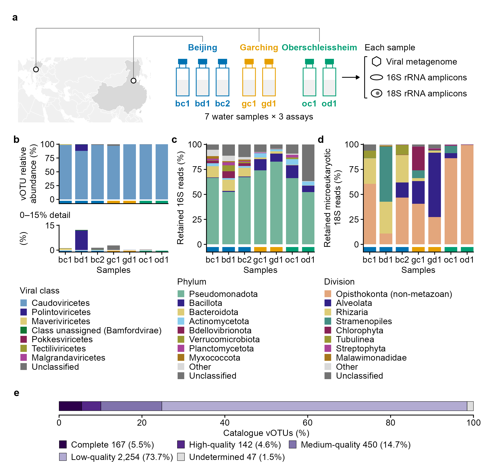
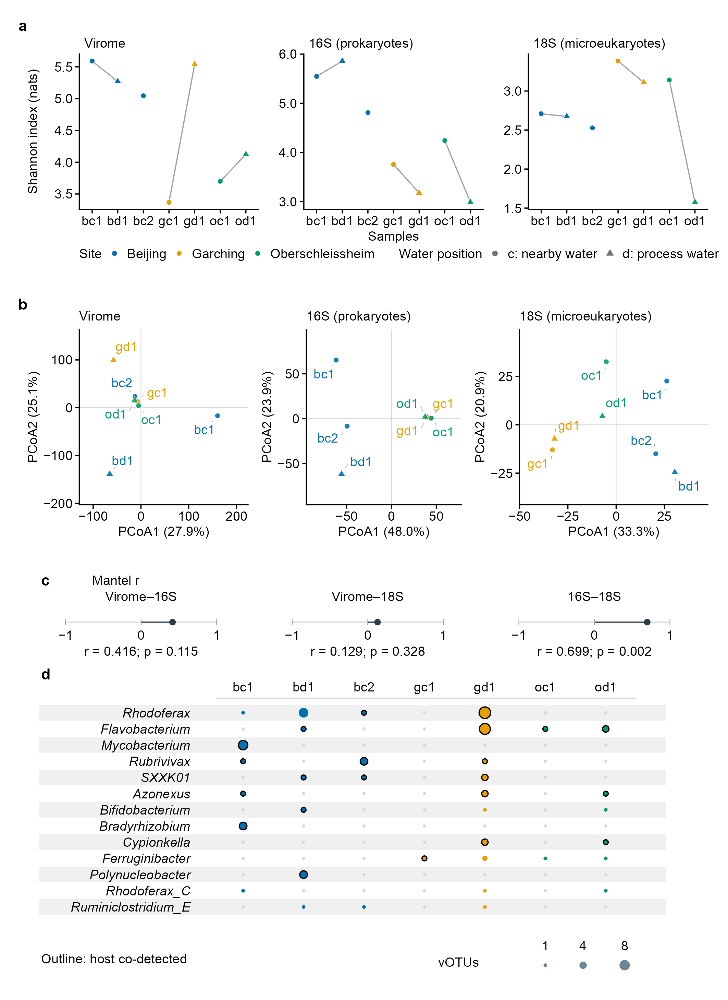
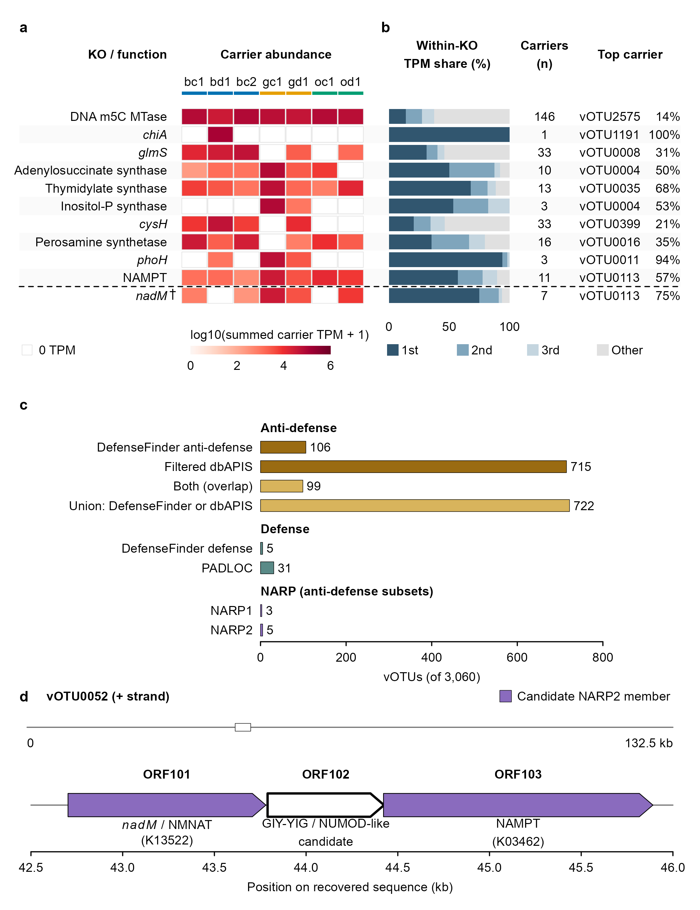
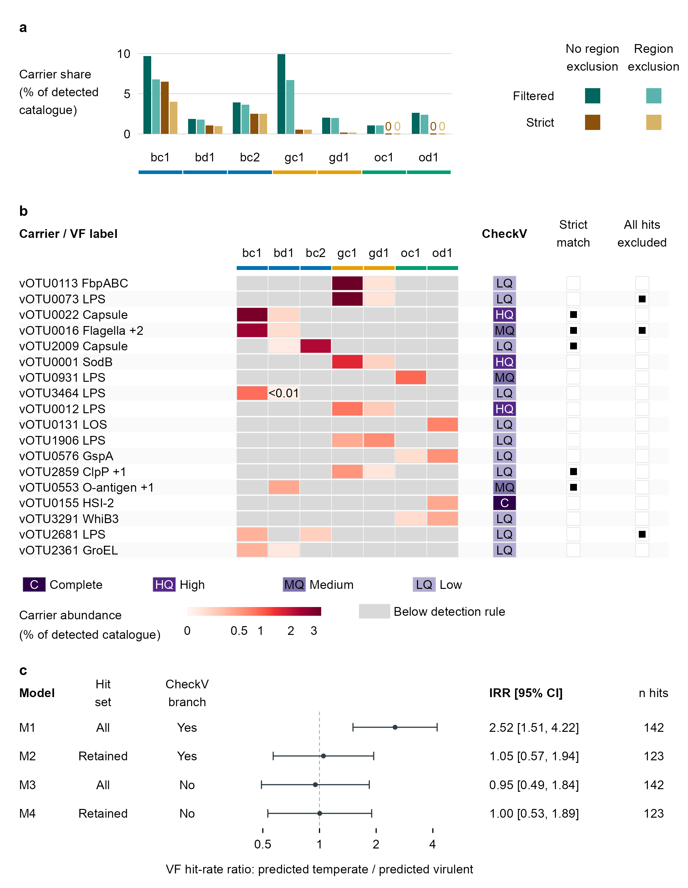
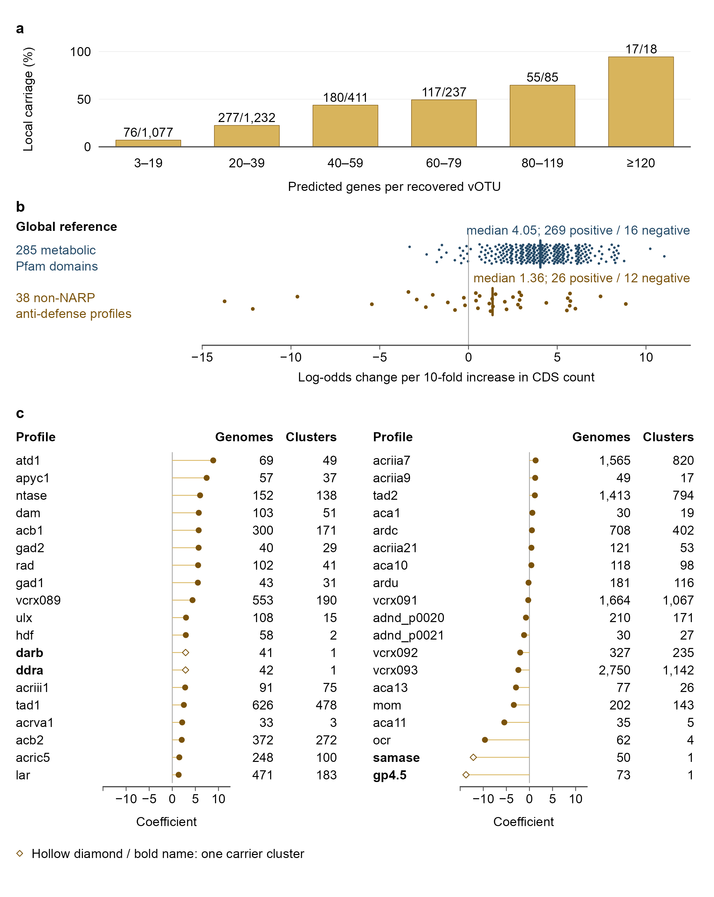
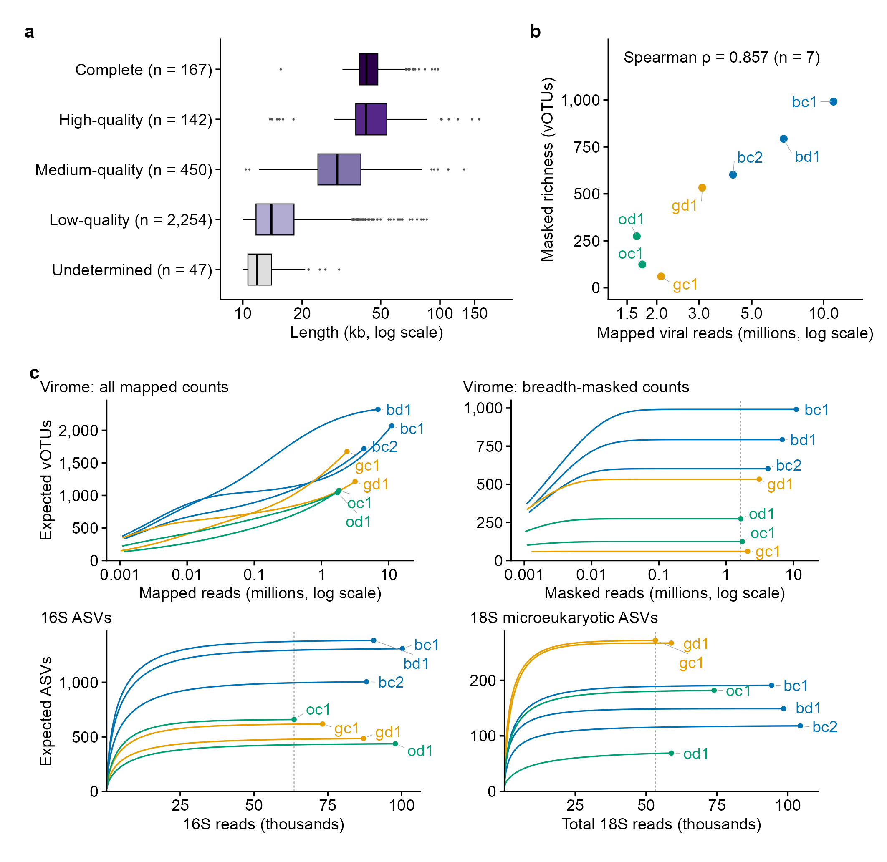
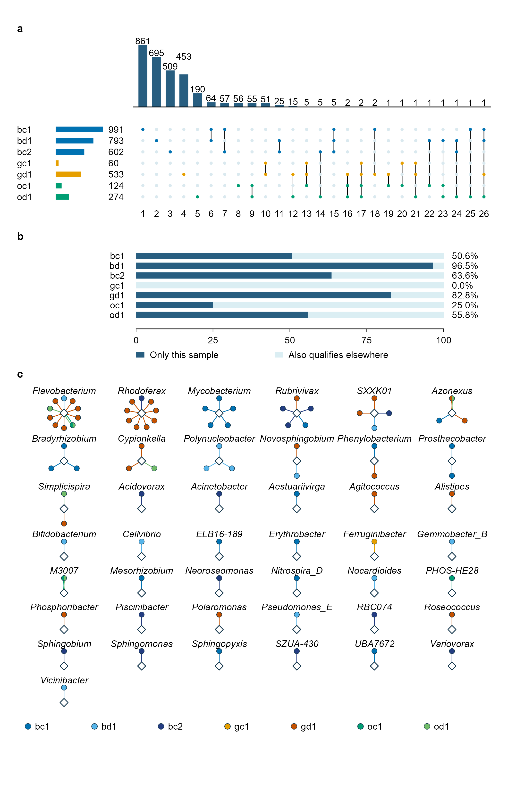
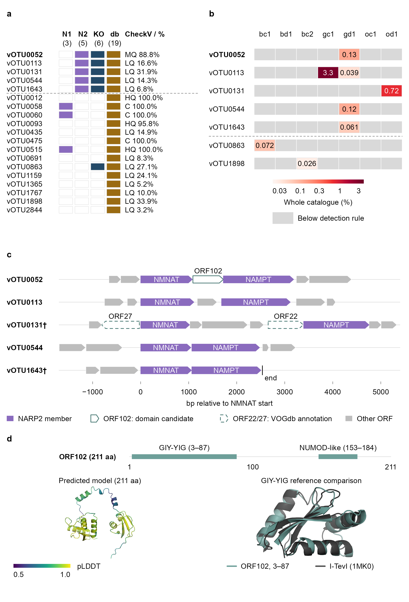
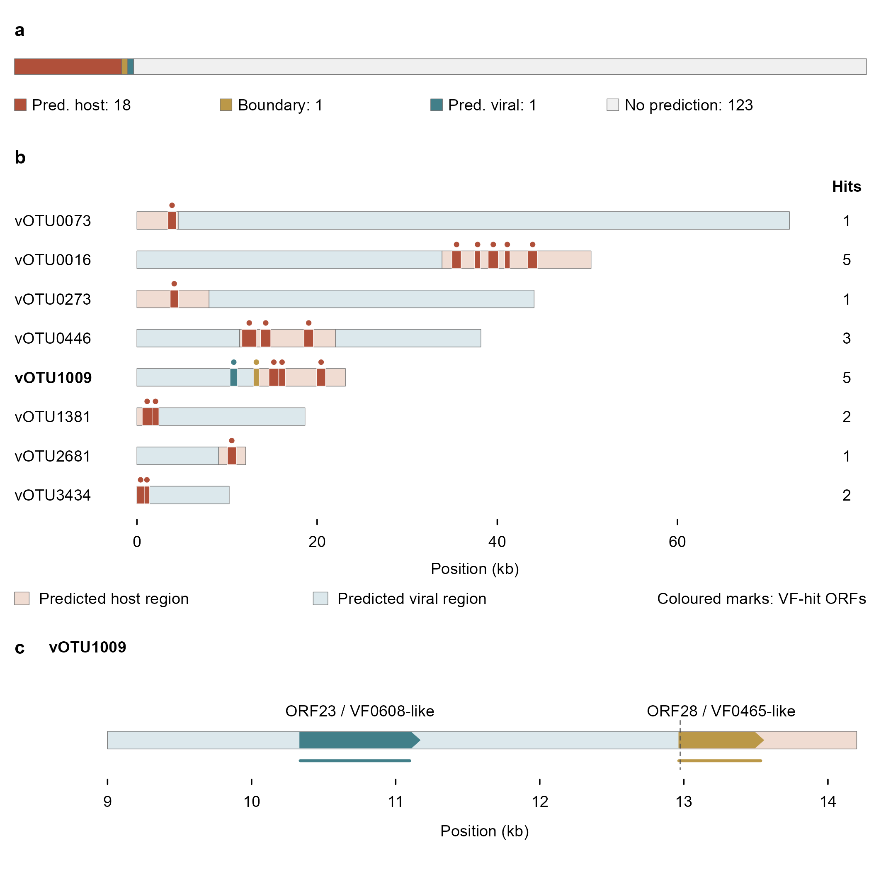

Status: figure final review passed (Codex, 2026-10-14); workflow revision passed (Codex, 2026-09-28); S4-to-Note adoption: independent-review-pending (Codex (implementer); current adoption not independently certified); Figure 2 / Supplementary Figures 1-4 adoption 2026-10-17: independent-review-pending (Claude (implementer)); Figures 3-5 version-D adoption 2026-10-18: independent-review-pending (Claude (implementer)); Figures 3-5 v39 fixes 2026-10-18: independent-review-pending (Claude (implementer)); Supplementary Figures 3-4 layout H and six-figure type size 2026-10-18: independent-review-pending (Claude (implementer)); four figure fixes (Figures 1, 3, Supplementary Figure 1) 2026-10-18: independent-review-pending (Claude (implementer)); text fixes and Supplementary Figure 1 trimming 2026-10-18: independent-review-pending (Claude (implementer)); nine-figure cleanup content review 2026-10-19: passed (Codex); release engineering 2026-10-19: independent-review-pending (Claude (implementer)). The workflow review covers the pipeline and the community migration evidence, not the full manuscript or every scientific conclusion; see the review record. This is a review candidate, not an accepted submission package. Generated 2026-10-20 00:24 CEST from run 20261020T001926-86706.
Community results (Figures 1, 2, S1; Data 1): analysis version analysis-v2026.09.28.1 (computed in this project: TSEs built by step 012 from the migrated SQLite snapshot and amplicon tables, community tables computed by step 020); other modules use archived results. Version record.
Previews below are the 300 dpi PNGs; the vector PDF and SVG of the same assembled object are linked under each figure.

- What the figure shows: Seven samples (Beijing 3, Garching 2, Oberschleissheim 2) each have three sequencing assays. Panels show within-assay composition and sample differences, and all five CheckV categories; 73.7% of 3,060 vOTUs are Low-quality.
- Interpretation limits: Do not compare absolute biomass across assays, interpret c/d as before/after treatment, treat regional markers as sampling locations, equate Low-quality with poor sequencing-read quality, or count 21 assay records as independent samples. Viral composition uses breadth >= 75% masked trimmed-mean coverage normalized to one million per sample; viral alpha uses masked read counts with repeated rarefaction. Both are masked but use different quantities and normalizations.
Figure 1 | Study design and composition of the three assays. (a) Seven water samples from three sites (Beijing: bc1, bd1, bc2; Garching: gc1, gd1; Oberschleissheim: oc1, od1), each profiled once by viral metagenomics and by 16S and 18S rRNA gene amplicon sequencing (21 assay records, not 21 independent samples). Map points are regional anchors (Beijing; the mean of the Garching and Oberschleissheim municipality coordinates), not sampling points. In the available sample descriptions, d denotes treatment-process water and c nearby water after facility outflow; these process positions are not verified hydraulic pairs, and bc2 has no designated d counterpart. (b–d) Relative composition within each assay; bars sum to 100% and are not comparable as absolute biomass across assays. The strip under each bar marks the site. (b) Viral classes (all 8 source labels) as shares of vOTU trimmed TPM after breadth masking at 75%; the expanded view replots the same values, without renormalization, for the classes other than Caudoviricetes on a 0–15% axis. (c) GTDB phyla as shares of retained 16S reads (archaeal phyla fall in Other). (d) Microeukaryotic divisions as shares of the 18S reads retained after removal of Metazoa, so Opisthokonta is non-metazoan. In c and d the eight taxa with the highest seven-sample mean are named, other named taxa are merged into Other and Unclassified is kept separate; colours do not link taxa across panels. (e) CheckV completeness classes of all 3,060 representative vOTU sequences (Low-quality: estimated completeness below 50%); they estimate genome recovery, not sequencing-read quality. Details: Supplementary figure notes, Figure 1; the full composition is in Data 1. Abbreviations: vOTU, viral operational taxonomic unit; TPM, abundance normalized to one million per sample; GTDB, Genome Taxonomy Database.

- What the figure shows: Panel d shows qualifying vOTU counts and same-sample 16S detection for 13 predicted host genera (top ten including ties). Cross-assay associations are strongest for 16S-18S (r = 0.699, nominal p = 0.002). Of 200 iPHoP records, 127 have genera visible in 16S: 83 co-detected and 44 never co-detected. Of 29 strict CRISPR edges, 13 are co-detected using the masked basis (15 unmasked), and three have visible genera without co-detection.
- Interpretation limits: Do not compare Shannon magnitudes across assays, infer treatment effects from c/d lines, interpret nominal p as adjusted significance, count 127 as genera, or equate visibility/co-detection with infection. CRISPR evidence overlaps high-score iPHoP records, so the two endpoints cannot be added or treated as independent validation. Unresolved genera are distinct from undetected genera; PCoA does not establish that geography dominates.
Figure 2 | Sample differences, cross-assay covariation and candidate host evidence. (a) Shannon index of the seven samples in each assay (virome: breadth-masked counts, mean of 100 rarefactions; 16S and 18S: rarefied tables). Features and depths differ, so values are not comparable between assays. Grey lines connect the c and d samples recorded at the same locality (three localities; bc2 has no designated d counterpart) only to show direction; they are not matched sampling points, treatment stages or replicated contrasts. The virome differences (d minus c) are −0.320, +2.168 and +0.423 and do not share one direction. Fill marks the site (as in Fig. 1) and shape the c/d record label (d, treatment-process water; c, nearby water after facility outflow, as given in the sample descriptions). (b) Principal coordinates of Aitchison distances (CLR-transformed profiles), one equal-scaled panel per assay; axis percentages are the variation explained. No grouping ellipses are drawn for n = 7. (c) Mantel r between the full Aitchison distance matrices of each pair of assays (n = 7; Spearman, 999 permutations), on a common scale from −1 to 1; the grey rule is that common range, not an interval estimate. p values are nominal and not adjusted, and the three pairs are not compared by significance. (d) Predicted host genera of the 200 retained iPHoP best-host records (score ≥ 90): the 13 genera with the most catalogue vOTU records, top ten with all ties kept (64 records). Bubble area is the number of distinct vOTUs assigned to the genus that qualify in the sample (breadth ≥ 75% and positive masked depth); it is not abundance or host cell number. A black outline marks a sample in which the predicted genus has a positive count in the retained 16S table; a grey dot means no qualifying vOTU of that genus, not absence of the host. Across all 200 records, 83 were co-detected with their predicted genus in at least one sample, 44 had the genus detected in 16S without co-detection, 70 had a genus not detected in 16S and 3 no resolved genus; of 29 strict CRISPR edges, 13 were co-detected. The four iPHoP categories partition the 200 records; the CRISPR summary overlaps the iPHoP evidence and is not added to it. These counts summarise all records rather than the genera drawn. Genus-level detection and co-detection are co-occurrence, not evidence of infection. Details: Supplementary figure notes, Figure 2. Abbreviations: CLR, centred log-ratio; PCoA, principal coordinates analysis; TPM, abundance normalized to one million per sample; iPHoP, integrated phage host prediction; CRISPR, clustered regularly interspaced short palindromic repeats.

- What the figure shows: Panels show the distribution of major candidate AMG KO contributions and carrier concentration, tool-specific defense/anti-defense calls (union 722), and the real ORF101-ORF103 arrangement on vOTU0052, one of five NARP2 calls. The approximately 3.2 kb locus is located within a 132.5 kb sequence.
- Interpretation limits: The heatmap is not expression or metabolic flux; K00558 does not establish enhanced sulfur metabolism. Do not add tool counts or compare their sensitivities from these counts. The candidate NARP2 locus is not a demonstrated anti-defense mechanism or experimental validation.
Figure 3 | Candidate auxiliary metabolic functions, their carriers, defense-related calls and one candidate locus. (a) Summed TPM of the vOTUs carrying each candidate AMG KO in each sample (log10(TPM + 1); no row scaling; white, zero). Rows are the ten KOs with the largest carrier TPM summed over the seven samples, followed below the dashed line by K13522 (nadM, marked †; bifunctional NMN adenylyltransferase/Nudix hydrolase), added in advance for the NARP-related locus in d. Each row is one KO shown by a short name: gene symbols in italics, otherwise the enzyme or function (DNA m5C MTase, DNA (cytosine-5)-methyltransferase; Inositol-P synthase, myo-inositol-1-phosphate synthase); KO numbers and full annotations are in Data 1 S51. Values are abundances of carrier sequences, not expression or metabolic flux. The strip marks the site (colours as in Fig. 1). (b) For the same rows, the share of row TPM from the first, second and third carriers and all others; colours denote rank within a row, not one vOTU across rows. Columns give the number of carriers (n) and the top carrier with its share. (c) vOTUs (of 3,060) with at least one call in each tool-specific set, with the anti-defense overlap and union (722); counts from different tools are not added and do not measure sensitivity. NARP calls are DefenseFinder NARP1 and NARP2 module calls, a subset of its anti-defense calls; candidate defense-related calls are DefenseFinder defense systems and PADLOC calls. (d) ORF101–ORF103 of vOTU0052, one of the five NARP2 calls in c, at their recorded coordinates; the line above marks this window on the whole 132,528-bp sequence. DefenseFinder places ORF101 and ORF103 in one NARP2 call; ORF102 (outlined) is a GIY-YIG/NUMOD-like candidate. The locus is a candidate annotation; activity or a mechanism was not tested. Details: Supplementary figure notes, Figure 3; the full matrices are in Data 1. Abbreviations: AMG, auxiliary metabolic gene; KO, KEGG Orthology; TPM, abundance normalized to one million per sample; NARP, NAD+ reconstitution pathway; NMNAT, nicotinamide mononucleotide adenylyltransferase; NAMPT, nicotinamide phosphoribosyltransferase; dbAPIS, a database of anti-prokaryotic immune system genes; PADLOC, a defense-system annotation tool.

- What the figure shows: Panel a shows seven-sample candidate-carrier shares under four annotation definitions. Panel b shows 18 of 114 carriers selected by maximum single-sample share. Panel c shows candidate VF hits per kb for predicted-temperate relative to predicted-virulent members of the same 3,013-vOTU model set; IRR > 1 favours temperate. All four models use Filtered candidates, not the four panel-a definitions. Localization scope/coordinates are in Supplementary Figure 4a/b and Note 3.
- Interpretation limits: Bars are annotation sensitivity, not replicates or treatment stages. Carriage is not VF expression, pathogenic risk or concentration. Zero bars and grey below-detection cells do not prove biological absence. The 18-row sums are not panel-a totals; a row is a carrier vOTU, and +n counts omitted function labels. Strict match and All hits excluded are independent flags and can coincide; blank flags do not prove absence or viral localization. The 123 unlocalized catalogue hits and 123 retained after model region exclusion are different sets. The models cannot establish that host contamination explains all association, the true effect is zero or one definition is correct; region and offset change together, and estimates are not independent replicates.
Figure 4 | Candidate VF-carrier shares, carrier composition and lifestyle-definition sensitivity. (a) Candidate VF-carrier shares in seven samples under four combinations of matching stringency and region exclusion (filtered or strict, each with or without exclusion of predicted host-region and boundary hits). Filtered shares range from 1.08–9.95%. Each carrier is counted once against the sample's whole detected catalogue; exclusion changes membership, not whole-contig abundance or the denominator. The bars are sensitivity settings, not replicates or treatment stages, and cannot be summed. (b) The 18 of 114 filtered carriers with the highest maximum sample share (ties by vOTU identifier), using the same denominator as (a); these rows do not include every carrier. Labels are VFDB reference-function homologues, not validated functions; +n denotes further function labels omitted, not gene counts or complete systems. The square-root colour scale is labelled in percentages. Coloured tiles mark whole-contig detection (breadth ≥ 75%); grey tiles denote failure to meet this detection rule, not biological absence. CheckV gives the estimated-completeness class of each carrier. Strict match marks at least one hit meeting identity ≥ 40% and query coverage ≥ 80%. All hits excluded marks carriers whose filtered hits all fall in predicted host regions or cross their boundaries. These marks are independent and can both apply; a blank exclusion mark does not establish viral localization. Zeros in (a) also denote no qualifying carrier, not biological absence. (c) All four models use filtered matches on the same 3,013 vOTUs; they do not correspond to the four definitions in (a). Negative-binomial models compare VF-hit rates per kilobase in predicted-temperate versus predicted-virulent vOTUs, adjusting for CheckV completeness. Points are incidence rate ratios (IRR); bars are 95% Wald confidence intervals on a log scale; the vertical line marks IRR = 1. Row labels cross region/length handling with inclusion or omission of the CheckV lifestyle branch. Region exclusion changes hit counts and length offsets together; their separate effects are not identified. The estimates share CheckV information, are dependent, and are not combined. Unlocalized hits are not confirmed viral genes; alternatives near one establish neither a zero biological effect nor a validated definition. Carrier shares measure neither VF expression nor water-health risk. Model specifications, catalogue-to-model accounting and mark details: Supplementary Note 3; carrier records: Data 1 S46–S48. Details: Supplementary figure notes, Figure 4. Abbreviations: VF, virulence factor; IRR, incidence rate ratio; CI, confidence interval.

- What the figure shows: Local candidate anti-defense carriage rises across predicted-gene-count bins, reaching 17/18 in the highest bin. The separate global catalogue supplies coefficient distributions for 285 metabolic domains and 38 non-NARP anti-defense profiles, including negative values, plus carrier-genome and gene-sharing-cluster support for the same 38 profiles.
- Interpretation limits: Local and global panels are not on a common data axis; global results do not validate the local trend. A median is not a between-set test and a cluster is not a genome. The local pattern does not separate recovery completeness from detection opportunity and does not establish causation.
Figure 5 | A local observation and a separate global reference. The local observation is shown first and the separate reference second; they are not the same effect measured twice. (a) Local catalogue: percentage of vOTUs with at least one candidate anti-defense annotation (DefenseFinder anti-defense call or filtered dbAPIS hit; the union of Fig. 3c) in six ordered bins of predicted genes per recovered vOTU; labels give carriers/vOTUs in the bin (all 3,060 vOTUs, 722 carriers). The gene count does not separate recovery completeness from detection opportunity; no trend is fitted and the bins do not establish a cause. (b) Separate global reference: coefficient of every feature in two fixed sets, 285 metabolic-related Pfam domains (navy) and 38 non-NARP anti-defense profiles (ochre), each from a logit model of presence against log10(CDS count) in 77,951 Caudoviricetes reference genomes labelled Complete by their source. All features are shown, including negative coefficients; the vertical bar marks each set's median, with the numbers of positive and negative coefficients. The metabolic domains are a second fixed class, not a baseline or null, and the coefficients are associations with coding capacity, not functional demand. (c) All 38 anti-defense profiles of b, sorted by coefficient with the order continuing from the left column to the right; each column has its own axis on the same coefficient scale, beside carrier genomes and gene-sharing clusters; hollow diamonds and bold names mark the four profiles whose carriers fall in one cluster, which is not one genome; support counts are not confidence intervals. Panels a and b use different units and feature definitions; the global arm does not validate the local observation. Details: Supplementary figure notes, Figure 5. Abbreviations: CDS, coding sequence; NARP, NAD+ reconstitution pathway; vOTU, viral operational taxonomic unit.

- What the figure shows: S1 shows lengths by five quality categories, richness versus mapped reads (rho = 0.857, n = 7; partly definitional), and expected detections during within-table read subsampling, separately for unmasked and fixed-mask viral counts.
- Interpretation limits: Flat curves do not establish complete environmental sampling: the breadth mask is determined at full depth and is not reassessed during subsampling; amplicon curves depend on denoising/filtering. Do not extrapolate beyond observed depth or call rho a Shannon correlation. PERMANOVA, dispersion and cross-assay statistics are retained in Data 1 S09-S11.
Supplementary Figure 1 | Catalogue quality and detection diagnostics. In b and c, colours mark sites as in Fig. 1. (a) Representative sequence length of all 3,060 vOTUs by CheckV class (boxes, median and interquartile range; points, beyond 1.5 × IQR). Undetermined is the CheckV label Not-determined. Length and completeness class do not certify read quality. (b) Breadth-masked viral richness against mapped viral reads (Spearman ρ = 0.857, n = 7; richness, not Shannon diversity); both come from the same masked mapping table, so part of the association is definitional. (c) Read-subsampling curves within the retained count tables: the expected number of features observed when n reads are drawn at random from a sample's own reads, interpolated up to its observed total and not extrapolated; x axes give the number of reads subsampled. Virome curves are shown for all mapped counts and for the breadth-masked counts used in Fig. 2a; the 75% breadth mask was fixed at full depth and is not re-evaluated on subsampling, so a flat masked curve does not show that viral communities were sampled completely. Amplicon curves describe the denoised and filtered ASV tables (16S before rarefaction); microeukaryote reads are drawn from all 18S reads and only non-metazoan ASVs counted. Dashed lines mark the common depths of the alpha diversity analyses. Marginal PERMANOVA, dispersion and cross-assay statistics for every distance and assay pair are in Data 1 (sheets S10, S11 and S09). Details: Supplementary figure notes, Supplementary Figure 1. Abbreviations: 16S, 16S rRNA gene amplicons (prokaryotes); 18S, 18S rRNA gene amplicons (microeukaryotes); c/d, recorded sample labels: d, treatment-process water; c, nearby water after facility outflow (from the sample descriptions; not verified hydraulic pairs or a before/after treatment); IQR, interquartile range; PERMANOVA, permutational multivariate analysis of variance; RV, RV coefficient of matrix correlation; vOTU, viral operational taxonomic unit.

- What the figure shows: S2 shows 26 nonempty qualified detection patterns, each sample's qualified set, and abundance contributions from sample-only/shared members under the sample-specific full masked-catalogue denominator. Of 200 high-score host records, 83 have same-sample co-detection at least once (43 genera, 86 sample events: 80 in one sample and three in two).
- Interpretation limits: Sample-only qualification is not biological uniqueness; sharing does not establish hydraulic transfer or removal. The 83 links are not infection evidence or an inferred correlation network; star groupings display one best genus per vOTU. The 18/296 inset is not the host composition of all 296 shared members; the 83-link and 296-member sets differ.
Supplementary Figure 2 | Seven-sample membership sharing, abundance contributions and candidate hosts. Membership overlap and candidate host co-detection describe different subsets of the catalogue. (a) The 26 observed exact qualification patterns of all 3,060 vOTUs. Upper bars count vOTUs in each exclusive intersection; coloured dots and connectors identify the qualifying samples, and left bars give each sample's qualifying set size. A single-dot intersection denotes sample-only qualification, not biological endemism. (b) Contributions of sample-only members (dark) and members qualifying in at least one other sample (pale) to each sample's full breadth-masked catalogue abundance; printed percentages are the sample-only share and every complete bar totals 100%. Bars weight members by masked trimmed mean depth, not by member count. (c) The 83 best-host records with at least one same-sample co-detection, linked to 43 predicted host genera and pooled across samples. Diamonds denote host genera and circles vOTUs; seven sample-specific shades in the site colour families mark the co-detection samples. 80 records were co-detected in one sample and 3 in two (split-fill circles with two spokes), giving 86 sample-specific observations. Sizes and positions encode neither abundance nor confidence; each vOTU keeps one best predicted genus, so the genus-centred groups follow this display rule and are not inferred ecological modules. Of the 200 high-score records, 44 with host-genus detection but no co-detection, 70 whose genus was not detected in 16S and 3 with an unresolved genus are not drawn as links and remain in Data 1. The 83 records in c are a different selection from the 296 shared members in a. iPHoP prediction and same-sample detection do not confirm infection, and neither qualification nor sharing demonstrates biological absence, hydraulic transport or removal. Details: Supplementary figure notes, Supplementary Figure 2. Abbreviations: 16S, 16S rRNA gene amplicons (prokaryotes); iPHoP, integrated phage host prediction; vOTU, viral operational taxonomic unit.

- What the figure shows: The four NARP definitions yield different sets: five NARP2 calls, six KO-rule members and 19 dbAPIS members. vOTU0052 is the only medium-quality member of the five DefenseFinder NARP2 calls. Other panels show seven-sample qualification/abundance under a common catalogue denominator, five real local neighbourhoods on a common bp scale, and ORF102 domain matches with the saved ESMFold2 model and local I-TevI overlay, a structural-consistency observation for the HE-like annotation. Note 1 retains host background and depth/reference checks.
- Interpretation limits: Do not relabel the six KO-rule members or vOTU0863/vOTU1898 as DefenseFinder NARP2. Definitions are neither sequential filters nor mutual validation. Grey cells do not establish absence; neighbourhood tracks do not infer cross-row homology, insertion history or collinearity. Domain/structure predictions do not establish folding, cleavage, homing or anti-defense activity. The envelope is not a third domain and relative domain orientation in the full model is uncertain. vOTU0052 was chosen for recovery quality, not abundance/function. Negative checks in Note 1 do not establish no amplification or association.
Supplementary Figure 3 | NARP candidates, local neighbourhoods and ORF102 structural context. (a) Membership under DefenseFinder NARP1/NARP2, K03462–K13522 co-occurrence and filtered dbAPIS NARP-targeting definitions. Column totals are shown in brackets. The five NARP2 calls are above the dashed line; vOTU0052 is in bold. C, HQ, MQ and LQ denote complete, high-, medium- and low-quality CheckV classes; percentages are estimated completeness. Definitions are not interchangeable independent validations. (b) The five NARP2 carriers and two additional nadM carriers, separated by the dashed line, across seven samples. Values are percentages of the whole breadth-masked catalogue (masked trimmed TPM/10,000), with a common logarithmic colour scale and no row standardisation. Grey tiles mean the existing sample-level detection criterion was not met, not biological absence. (c) Saved gene coordinates for the five NARP2 neighbourhoods, using a common bp scale and two flanking annotated ORFs where available. vOTU0131 and vOTU1643 (†) are reversed for display; original coordinates/strand are retained. Purple arrows are NARP2 member genes; the solid outlined ORF102 is a GIY-YIG/NUMOD-like domain candidate and the dashed ORF22 and ORF27 outlines are DRAM-v VOGdb annotation descriptions, a different evidence class (Supplementary Note 1). The contig end is marked. Rows are anchored at the NMNAT start (coordinate anchoring, not an alignment); no cross-row homology or insertion event is inferred. (d) Historical sequence-domain match intervals and the selected full-length ESMFold2 model of ORF102, coloured by native pLDDT (0–1; displayed range 0.5–1), plus a local GIY-YIG comparison with I-TevI (PDB 1MK0, E75A mutant). PyMOL cealign uses 80 paired Cα atoms; the full-model domain arrangement is uncertain (cross-region PAE 24.7 Å). These are predicted fold-consistency observations, not confirmed enzymatic or anti-defense activity. ORF102 is separate from the ORF101/ORF103 NARP2 call. Former host-background panel a is retained in Supplementary Note 1, Table C and Data 1 S22; historical depth and reference-position checks remain in Note 1, Tables A and B. Coordinates, confidence arrays and alignment provenance are in Supplementary Data 4. Details: Supplementary figure notes, Supplementary Figure 3. Abbreviations: C, HQ, MQ, LQ, CheckV complete, high-, medium- and low-quality; HE, homing endonuclease; i-E-value, independent E-value; KO, KEGG Orthology; NARP, NAD+ reconstitution pathway; ORF, open reading frame; PAE, predicted aligned error; pLDDT, predicted local distance difference test; vOTU, viral operational taxonomic unit.

- What the figure shows: Among 143 candidate catalogue hits, 18 are predicted-host, one crosses a boundary, one is viral-localized and 123 lack a region prediction. Tracks show eight carriers, 17 predicted regions and 20 hits on an absolute kb scale; the vOTU1009 zoom distinguishes full ORFs from VFDB HSPs. Controlled-construct endpoints (0/512, 315/720, 33/720) are retained in Results and Supplementary Note 3.
- Interpretation limits: No region prediction does not establish viral localization; 123 is not a viral count and hits are not contigs. vOTU1009 is one of eight carriers, not all 143 hits. A -like label denotes sequence similarity, not demonstrated function. Construct endpoints do not estimate the natural-sequence error rate and cannot be added. Candidate similarity does not establish virulence or treatment effects.
Supplementary Figure 4 | Regional scope and genomic positions of candidate VF matches. (a) Of 143 filtered VFDB-A matches in the complete catalogue, 18 intersect predicted host regions, 1 crosses a predicted boundary, 1 lies in a predicted viral region and 123 lack usable region predictions. Absence of a prediction does not establish viral origin. (b) All eight VF-bearing CheckV-flagged recovered sequences, with 17 predicted region segments and 20 VF-hit ORF intervals, plotted on a shared absolute kb scale. Right-hand labels count hits; exact recovered lengths are in Data 1 S31. Same-colour points aid visibility without adding hits; region fills and hit colours have distinct meanings. (c) A selected vOTU1009 zoom separates two VF-hit ORFs (arrows) from their VFDB-matching segments (HSP lines); other flanking genes are not shown. The CheckV boundary at 12,974/12,975 bp separates predicted viral and host regions. The ORF23 HSP spans 762 nt in the viral region and 0 nt in the host region; the ORF28 HSP spans 10 nt and 560 nt, respectively. This selected case is one of the eight carriers in b, is not representative of all 143 matches, and its -like labels are sequence homologues; predicted localization does not confirm biological function. Controlled-construct endpoints are reported in Results and Supplementary Note 3 rather than drawn here: unflanked controls flagged, 0/512; primary flanked constructs unflagged, 315/720; primary flanked constructs retaining less than 95% of viral bases, 33/720 (minimum retention 64.0%). These distinct endpoints must not be combined into an overall error rate; artificial constructs are not ground truth for the natural catalogue, and repeated constructs from one mother genome are not independent biological replicates. Full stratified results, individual sub-threshold records and model-scope accounting are in Supplementary Note 3 and Data 1 S29–S36, S40–S41 and S48. The 143 catalogue hits differ from the 142 hits in the 3,013-sequence model subset. Details: Supplementary figure notes, Supplementary Figure 4. Abbreviations: VF, virulence factor.
The former six-panel global S4 is no longer a submission figure (the current Supplementary Figure 4 is the VF calibration). View Note 4 · Markdown · Firth summary · Data navigation · Unresolved records · Numeric checks